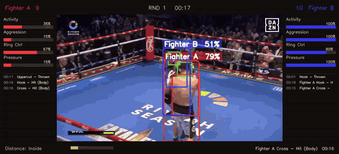

Ring Dynamics
Real-time pose-based combat analytics
- YOLOv8-pose + ByteTrack pipeline that uses ring-zone limits and color-based re-identification to separate the two fighters from referees and spectators across camera cuts, at ~24 FPS on CPU with no GPU.
- Temporal scoring model combining pose keypoints and motion into 4 EMA-smoothed metrics, producing estimated 10-9 round scores, strike events, and a per-second analytics timeline exported as structured JSON.
- Full-stack platform (FastAPI, Next.js) with background video upload and YouTube ingestion, RFC 7233 byte-range streaming, and a dashboard that shows live metrics in sync with the annotated video.